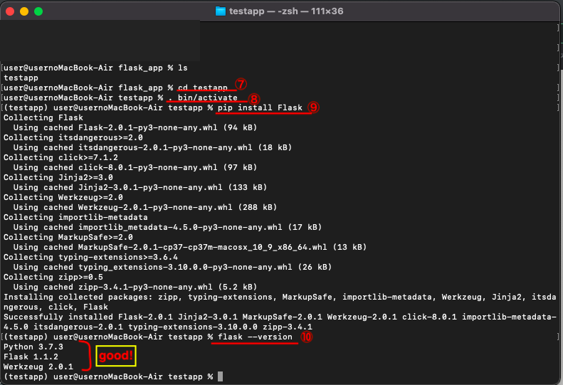

Flaskのインストール方法
2021/06/09
ここではWebアプリケーション作成に必要なFlaskのインストール方法についてまとめる。
＊Macの場合
①pythonのバージョンが3系であることを確認する。
→3系でない場合はこちらを参照。
python --version
②virtualenvをインストールする。
virtualenvとはshell上でプロジェクトごとに個別の仮想環境を構築できるツールのこと。
pip install virtualenv
③finder内にFlaskのプロジェクトのフォルダを作る
mkdir ”ファイル名”
※""は書き込まない
私の場合、learningというフォルダの中にflask_appというフォルダを作った。
cdはフォルダを移動するときに使うコマンド
④フラスクのプロジェクトを保存するフォルダにいることを確認する。
cd "ファイル名"
⑤flaskアプリケーションを作成する
virtualenv "ディレクトリ名"
ここではtestappにした。
⑥ディレクトリの中身を確認する。
※llのコマンドで動かなかったため、lsでtestappのディレクトリができているか確認して、Finderで開いて見た。

⑦5番で作ったディレクトリ（testapp）に移動する。
cd testapp
⑧この環境を使用するためにアクティブ化する。
. bin/activate
→上記で動かない場合はsource bin/activateと入力する。
※うまくアクティブ化することができたら⑩の行のように表示される。
⑨flaskをインストールする。
pip install Flask
⑩無事に完了したか確認する。
Flask --version